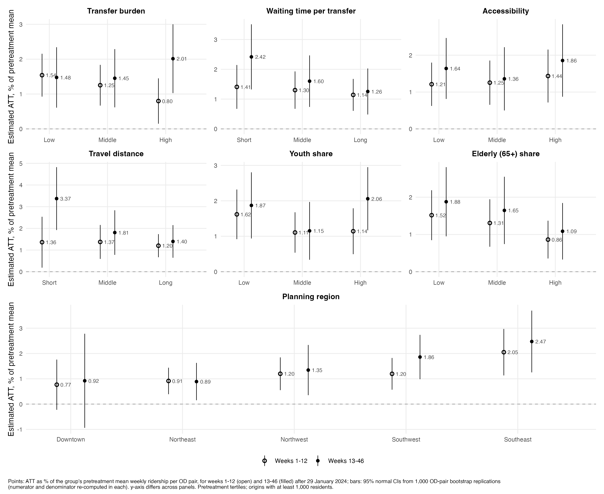
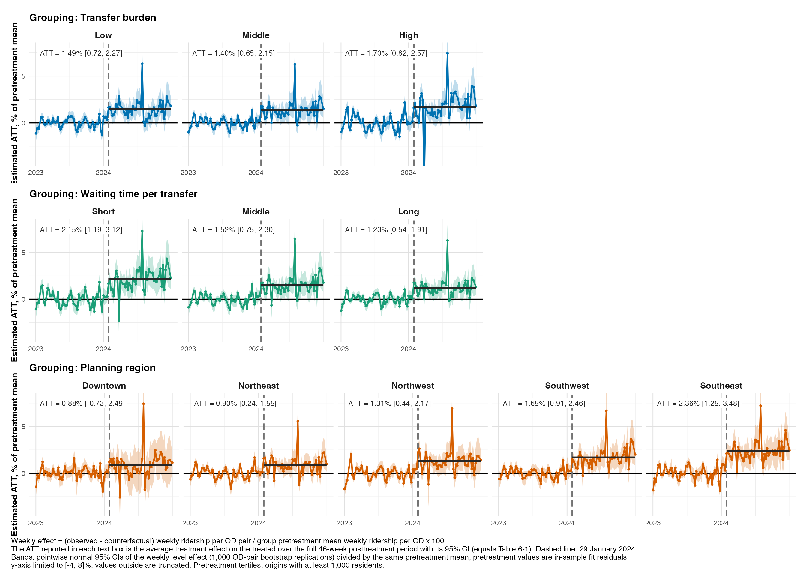
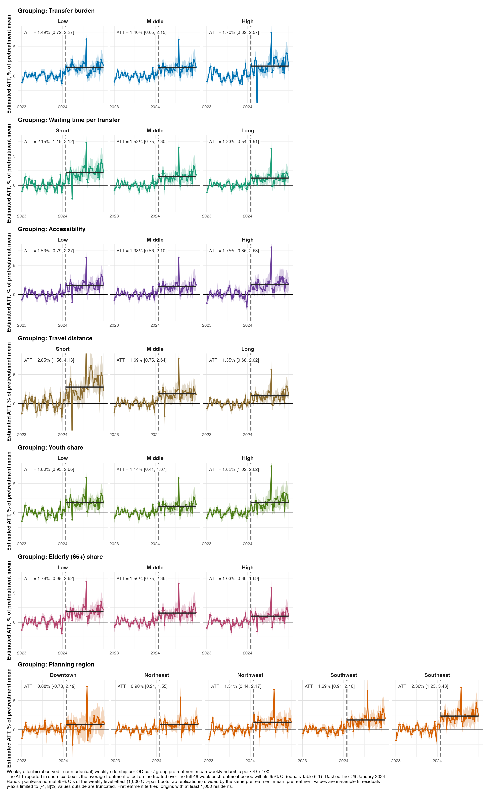
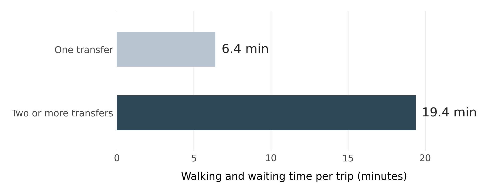

② 효과 이질성② Effect heterogeneity
①의 전체 모형 적합값을 그대로 두고, 출발지 특성별 3분위 집단마다 효과를 다시 집계했습니다. 집단 비교는 처치 전 평균 이용량 대비 효과율(%)로, 집단별 재추정은 하지 않았고 분위 경계는 추정 효과를 보지 않고 정했습니다.Using the full-model fit from ①, effects are re-aggregated for pretreatment tertiles of origin characteristics. Groups are compared on the effect as % of the group\'s pretreatment mean ridership; no group-specific refits; tertile boundaries were set without looking at the effects.
- 효과율 = 100 × (집단 평균 추정효과, OD쌍당 주간 인일) / (같은 OD쌍들의 처치 전 53주 평균 주간 이용량). 쌍체 OD 부트스트랩 1,000회(분모도 매 반복 재계산), 정규근사 95% CI, p값 다중비교 미보정. 반사실 대비 % 판은 이전 세대 결과로
R2_r4_cf_*폴더에 남겨 두었습니다.Effect = 100 × (group mean estimated effect, weekly person-days per OD pair) / (the same ODs' mean weekly ridership over the 53 pretreatment weeks). 1,000 paired OD-pair bootstrap draws (denominator recomputed in each), normal 95% CI, unadjusted p-values. The earlier counterfactual-relative version is kept in theR2_r4_cf_*folders. - 대기 시간: 2023년 6–8월 환승 보행+대기(최초 승차 대기 제외). 인구 1,000명 이상 출발지.Waiting time: June–Aug 2023 transfer walking + waiting (first boarding wait excluded). Origins with population ≥ 1,000.
- 기술적 이질성이며 특성 자체의 인과효과가 아닙니다.Descriptive heterogeneity, not causal effects of the characteristics.
3분위 집단별 효과율 (46주 전체, 처치 전 평균 대비 %)Effects by tertile (full 46 weeks, % of pretreatment mean)
| 특성Characteristic | Q1 | Q2 | Q3 | Q3−Q1 (%p)Q3−Q1 (pp) | 95% CI | p |
|---|---|---|---|---|---|---|
| 환승 부담Transfer burden | 1.49 | 1.40 | 1.70 | +0.20 | −0.54 – 0.94 | .59 |
| 대기 시간Waiting time | 2.15 | 1.52 | 1.23 | −0.93 | −1.66 – −0.20 | .012 |
| 접근성Accessibility | 1.53 | 1.33 | 1.75 | +0.22 | −0.49 – 0.93 | .55 |
| 통행 거리Trip distance | 2.85 | 1.69 | 1.35 | −1.50 | −2.48 – −0.52 | .003 |
| 청년 비율Youth share | 1.80 | 1.14 | 1.82 | +0.01 | −0.75 – 0.78 | .97 |
| 고령 비율Elderly share | 1.78 | 1.56 | 1.03 | −0.76 | −1.44 – −0.08 | .029 |
출처Source: …/R2_r4_prepct_level_20261103/group_level_prepct.csv, contrast_level_prepct.csv (stat = pct, window = full). 단위 %. 같은 파일의 stat = lvl 행이 OD쌍당 주간 인일 수준값과 처치 전 평균.Values in %. Rows with stat = lvl give the level effect (weekly person-days per OD pair) and the pretreatment mean.
시간에 따른 변화Change over time
환승 부담 상위 집단의 효과는 시간이 지나며 커졌습니다: (후기 − 초기) Q3−Q1 차이 +1.28%p (95% CI 0.69 – 1.87). 통행 거리는 반대로 −1.81%p (95% CI −2.94 – −0.69). 그림 6-5는 초기 12주·후기 34주의 집단별 효과율입니다.For high transfer burden the effect grew over time: late-minus-early Q3−Q1 difference +1.28 pp (95% CI 0.69–1.87). For trip distance it was −1.81 pp (95% CI −2.94 to −0.69). Fig. 6-5 shows the group effects for weeks 1–12 and 13–46.
환승 × 대기 교차 (반사실 대비 %)Transfer × waiting (counterfactual-relative %)
교차항(높은 환승에서의 대기 차이 − 낮은 환승에서의 대기 차이)은 −1.07%p (95% CI −4.06 – 1.92)로 유의하지 않습니다.The interaction (wait gap within high transfer minus within low transfer) is −1.07 pp (95% CI −4.06–1.92), not significant. 표table
그림 6-5 · 주별 효과 (처치 전 평균 대비 %)Fig. 6-5 and weekly effects (% of pretreatment mean)




그림 자료Figure data: …/R2_r4_prepct_level_20261103/fig_hetero_weekly_prepct_all_en_data.csv
이전 세대 그림(반사실 대비 % 판 *_cf_en.png, 주민 1,000명당 지표 그림 6-1~6-3)은 그림 갤러리에 참고용으로 남아 있습니다.Earlier-generation figures (counterfactual-relative *_cf_en.png; per-1,000-residents Figs 6-1 to 6-3) remain in the gallery for reference.
5분위 민감도 결과: Quintile sensitivity: R2_r4_cf_quintiles_20261103/
코드Code
code/02_heterogeneity/ — ①의 적합 객체와 부트스트랩 결과 필요(일부 아직 미업로드).needs the fit and bootstrap draws from ① (some not uploaded yet).